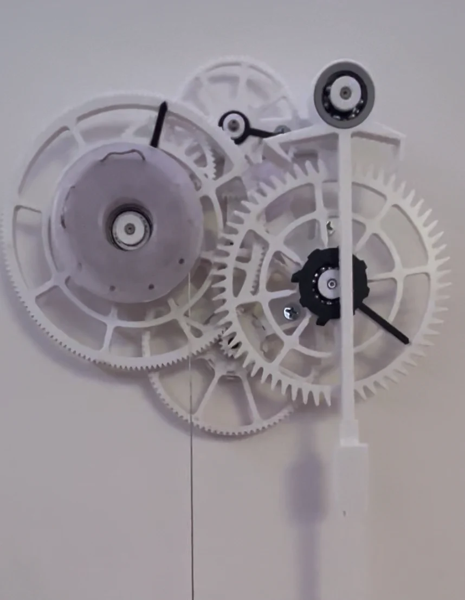
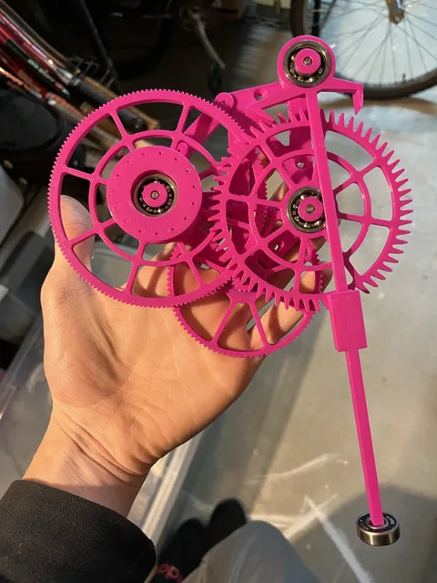
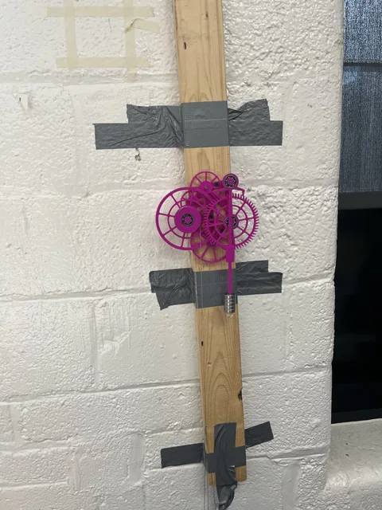
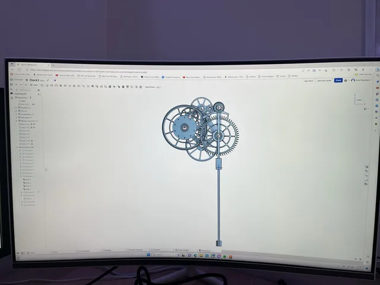
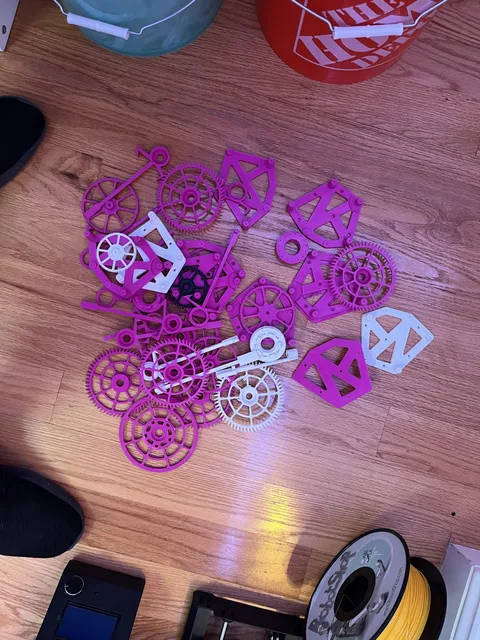

{kind=link}
{kind=link}
{kind=link}
{kind=link}
Mini Cybertruck go-kart
A homemade steel-frame go-kart with electronic steering, remote control, and a custom starter-generator.
A gravity-driven clock and a hands-on lesson in friction, gear geometry, and tolerances.

I designed and printed a fully mechanical, gravity-driven clock. The project required a gear train and escapement that could run with very little available energy.
The high gear ratio meant that even slight friction near the escapement had a large effect on the drive requirements. I printed and tested many geometry and tolerance variations to improve the mechanism.
The documented iterations reduced the required counterweight mass by 75%. The discarded prototypes were essential to understanding how printed parts behave as a working mechanism.
Select any photo to open the full-size gallery.





A homemade steel-frame go-kart with electronic steering, remote control, and a custom starter-generator.
Building the tool behind the projects: a compact, 3D-printed machine for milling custom circuit boards.